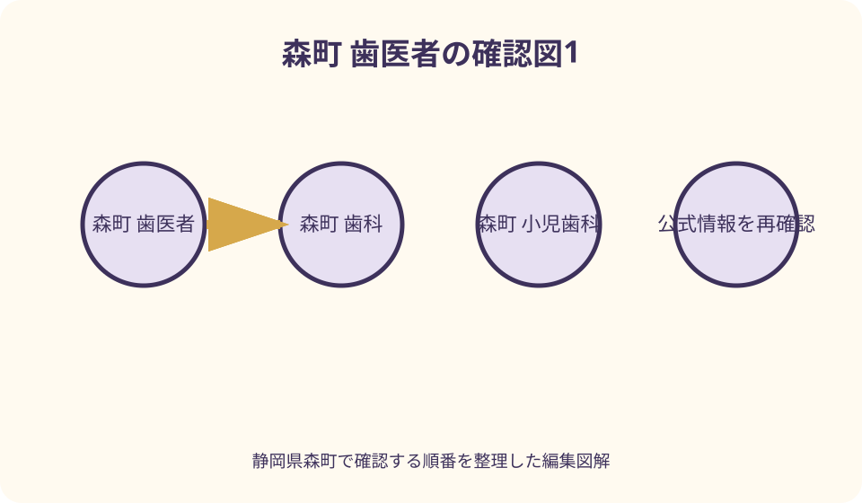
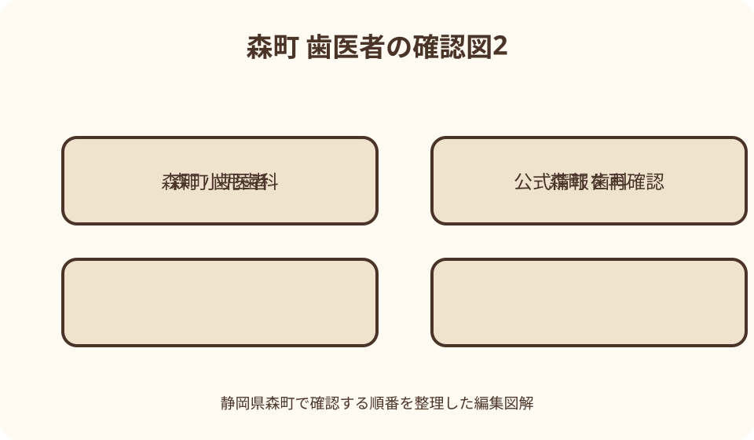

医療・暮らし｜最終確認 2026-08-10
静岡県森町の歯科・歯医者の探し方｜小児・訪問・休日急患を分けて確認
静岡県森町で歯科を探す時は、森町公式の町内医療機関一覧で所在地を確認し、厚生労働省の医療情報ネットで診療科・受付時間・交通を絞り、最後に歯科医院へ電話して当日の受付可否を確認します。通常診療、小児歯科、訪問歯科、休日当番、病院の歯科口腔外科は役割が異なります。症状の診断や口コミ順位から選ばず、年齢、困っている部位と経過、服薬、通院可否を伝えて予約先を確認してください。休日は磐周歯科医師会の当番が月ごとに変わるため、森町公式の案内から当日情報を確認して事前に電話します。

編集イラスト最初に四つへ分ける——通常・小児・訪問・休日急患
森町で歯科を探す前に、定期的または平日に相談できる通常診療、子どもの受診、通院困難者の訪問、日曜・祝日等の急患という四つに分けます。同じ歯の困りごとでも予約先が異なります。
森町公式の町内医療機関一覧には、宇藤歯科医院、仲町歯科医院、松田歯科医院、山本歯科医院、渡辺歯科医院が住所・電話とともに掲載されています。掲載順を推奨順位とは受け取りません。
厚生労働省の医療情報ネットでは、所在地、診療科目、受付時間、駐車場、交通などを検索できます。ただし登録情報には更新時差があり得るため、検索画面だけで当日受診できると判断しません。
この記事は二〇二六年八月十日に公式情報を確認した案内で、診断や治療法を示すものではありません。症状、対象年齢、訪問範囲、当番日は変わるため、受診前に医療機関へ直接確認します。
町公式一覧を入口にする——名称・住所・電話を照合
森町公式の「病気になったとき」は、町内の医科と歯科を一表にしています。歯科名だけをメモせず、森、飯田、一宮などの所在地と電話番号を同時に記録し、同名施設の取り違えを防ぎます。
一覧に載ることは、すべての歯科処置、小児、矯正、訪問、休日診療へ対応する保証ではありません。施設ごとの診療科と対応内容を医療情報ネットまたは当事者公式で追加確認します。
町のページは休日救急の入口として磐周医師会・磐周歯科医師会と医療情報ネットも案内しています。過去の広報に載った当番表を保存して使わず、受診日の月の情報へ進みます。
電話番号が町公式、医療情報ネット、医院サイトで異なる場合は、更新日と用途を見ます。予約、代表、フリーダイヤル等の区別が分からなければ、医院公式の現行連絡先へ確認します。
医療情報ネットで絞る——距離指定と診療科を確認
医療情報ネットで「静岡県森町」と検索しても、距離指定なしでは町外を含む多数の施設が表示される場合があります。住所が周智郡森町か、地図の周辺範囲かを一件ずつ確認します。
診療科欄は、歯科、小児歯科、矯正歯科、歯科口腔外科を分けて読みます。表示された診療科名だけで、希望処置、年齢、紹介状なしの初診に対応できるとは判断しません。
受付時間は診療終了時刻と同じとは限らず、曜日や診療科で変わります。医療情報ネット上の時刻、休診、最終更新を見たうえで、臨時休診と予約枠を電話で確かめます。
駐車場ありの表示も、台数、入口、車いす乗降、満車時の代替を示すとは限りません。交通欄を候補づくりに使い、施設へ実際の進入方向や乗降方法を尋ねます。

通常の歯科を予約する——困りごとと経過を短く伝える
平日の通常診療を予約する時は、検診希望か、痛み、腫れ、詰め物の脱落、義歯、歯ぐき等の困りごとかを短く伝えます。自分で虫歯や歯周病と診断して処置名を指定しません。
いつから、どの辺り、外傷の有無、食事や睡眠への影響、発熱等の全身状態を受付へ伝えます。受付担当が緊急性を診断するとは限りませんが、予約時刻や紹介先を判断する情報になります。
初診、久しぶりの再診、継続治療中の転院では必要時間と資料が異なります。他院で撮影した画像や紹介状を持つ場合は、持参形式と事前送付の可否を確認します。
予約できた時刻は診療開始の確約ではなく、急患や処置で待つ場合があります。受付時刻、到着目安、遅刻時の扱い、キャンセル連絡を聞き、仕事や送迎に余裕を取ります。
小児歯科を探す——診療科名と対応年齢を別に聞く
子どもの受診では、医療情報ネットに小児歯科と登録されているかを確認します。仲町歯科医院は同ネットで歯科・矯正歯科・小児歯科等が表示されますが、当日の受入年齢は直接確認します。
小児歯科の表示がない歯科でも子どもへ対応する場合、逆に表示があっても年齢や処置で別施設を案内する場合があります。生年月日、困りごと、受診歴を予約時に伝えます。
学校・園の歯科健診結果を受けて予約する場合は、結果票を手元に置きます。健診の判定は診断の確定ではないため、家庭で患部を触って確かめず、歯科で評価を受けます。
子どもには「絶対痛くない」「一回で終わる」と約束せず、口の中を見てもらう場所と説明します。保護者同伴、きょうだい同席、ベビーカー、診療前の飲食を医院へ確認します。
年齢と配慮事項を共有する——発達・感覚・医療歴を伝える
発達、感覚過敏、コミュニケーション、姿勢保持、医療的ケアなど配慮が必要な場合は、予約時に具体的な苦手と有効な方法を伝えます。診断名だけで全対応を推測させません。
短い時間、静かな時間帯、段階的な練習、車いす移乗等を希望する場合は、設備と人員の可否を聞きます。要望を伝えたことと対応可能の回答を得たことを分けて記録します。
公立森町病院の歯科口腔外科は障害者歯科を対象領域に掲げていますが、原則として一般歯科診療を行わないとも明記しています。紹介経路と受診条件を病院へ確認します。
過去に治療が難しかった経験があっても、特定医院なら必ず成功するという推薦はしません。本人の状態、希望、地域歯科との連携を説明し、適切な受診先を相談します。

訪問歯科を探す——通院困難の状況と訪問先を確認
訪問歯科は、単に送迎が面倒という意味ではなく、疾病や傷病等により通院できない人を対象とする場合があります。本人の状態、居場所、介護状況を電話で伝え、対象を確認します。
公立森町病院の歯科口腔外科は、在宅や施設で療養し病院へ通院できない人への訪問診療を掲載しています。訪問範囲、紹介、予約、保険、可能な処置は病院へ個別に尋ねます。
民間歯科の訪問対応を探す場合は、医療情報ネットの在宅医療項目と医院公式を確認し、森町の住所が訪問区域かを電話で聞きます。検索サイトの「訪問可」だけで予約を確定しません。
予約時は、氏名、生年月日、住所、施設名、通院が難しい理由、主治医、服薬、介護者、駐車、室内移動を伝えます。ケアマネジャーや訪問看護との連絡が必要かも確認します。
訪問前に環境を整える——処置範囲を家庭で決めない
訪問当日は、本人確認、保険・受給情報、お薬手帳、診療情報、義歯等を用意します。ベッド周囲、照明、水、電源が必要かは事前指示に従い、無理に本人を移動させません。
訪問でできる検査や処置は、設備、本人の全身状態、住環境で変わります。自宅で抜歯や画像検査まで必ず完了すると決めず、診察後の説明と連携先を確認します。
施設入居者は、施設側の契約歯科、家族同意、診療時間、情報共有の手順がある場合があります。家族が医院へ直接予約する前に、施設の看護・介護担当へ相談します。
継続的な口腔ケアは、歯科医師・歯科衛生士の訪問、介護者の日常支援、本人の負担を分けて考えます。自己流の器具や薬剤を使わず、指示内容を記録します。
歯科口腔外科を選ぶ場面——一般歯科と役割を混ぜない
公立森町病院の歯科口腔外科は、歯や顎・顔面の疾患を地域歯科や後方支援病院と連携して扱います。親知らず、外傷、炎症、顎関節、粘膜等を対象例に挙げています。
一方で、同科は原則として一般歯科診療を行わず、医学的理由で地域歯科の治療が難しい場合や僻地の患者バス利用者等に限る案内があります。虫歯治療目的で直接向かわないよう確認します。
地域の歯科医院から紹介を受ける場合は、紹介状、予約券、画像、服薬情報をどう渡すかを確認します。病院の連携事務係は紹介予約を扱っており、患者側の飛込み受診と手順が異なります。
顔面外傷や強い腫れなど急な状態でも、記事から受診科を診断しません。救急要請が必要な状態か、当直で歯科対応可能かを一一九または医療機関への事前電話で確認します。
休日急患を探す——月ごとの当番と電話確認を優先
森町公式は、磐周歯科医師会が毎月救急当番医を定め、日曜・祝日等の診療を行うと案内しています。曜日が休日だから町内の同じ医院へ行けばよい、という固定当番ではありません。
受診当日に森町公式の救急案内から当番情報へ進み、日付、医院名、所在地、受付時間を確認します。過年度の広報PDFや検索結果の抜粋は、現在の当番表として使いません。
当番医院へは出発前に電話し、年齢、困りごと、外傷、発熱、服薬、到着見込みを伝えます。当番でも診療体制や状態により別医療機関を案内される可能性があります。
休日診療は応急対応が中心となる場合があるため、後日のかかりつけ歯科への引継ぎ、処方、次回受診、会計を確認します。一回で治療完了すると期待しません。
夜間・緊急を分ける——直接来院せず電話で受入確認
夜間の歯の痛みと、呼吸・意識・止まらない出血等の生命に関わる状態を同列にしません。危険が切迫していると判断したら一一九へ連絡し、通常の歯科予約まで待ちません。
公立森町病院は救急受診前に代表電話へ連絡するよう案内し、時間帯や症状によって他医療機関を勧める場合があるとしています。歯科医師が常時当直していると想定しません。
同病院は深夜二十二時から翌朝六時の救急受診を原則制限すると掲載しています。不安がある場合はまず電話する案内ですが、救急車が必要な危険状態は一一九を優先します。
自己判断で残った抗菌薬や鎮痛薬を使うことは避け、服薬済みなら薬名、量、時刻を伝えます。市販薬の可否も持病、妊娠、他薬との関係があるため薬剤師等へ確認します。
持参物をそろえる——保険・薬・過去資料を分ける
基本の持参物は、マイナンバーカード等の保険資格確認、各種受給者証、診察券、お薬手帳です。制度変更や医院運用があるため、初診予約時に現在必要な原本を確認します。
紹介状、検査画像、治療経過、義歯、学校健診結果、母子健康手帳等は受診目的に応じて持参します。USBやメール添付を勝手に用意せず、医院が読める形式と返却方法を聞きます。
服薬は歯科以外の薬、注射、サプリメントも含め、分かる資料を用意します。骨粗しょう症治療や化学療法等を病院が受診条件例に挙げているため、自己判断で省略しません。
現金以外の支払、医療証の県外扱い、保険外費用、診断書は医院ごとに異なります。予約時または受付で説明を受け、ウェブの価格例から自分の会計を断定しません。
交通を比較する——駅徒歩・バス・車を実際の時刻で見る
医療情報ネットは仲町歯科医院について戸綿駅・遠州森駅や遠州森町バス停からの徒歩情報を掲載しています。表記には複数経路があるため、予約時刻に合う便と徒歩を確認します。
宇藤歯科医院は遠州森町バス停からの徒歩案内が同ネットに掲載されています。他の医院も住所から経路を作り、診療科や受付条件が合うかを確認してから交通を比較します。
車では駐車台数、入口、満車時、車いす乗降を医院へ聞きます。歯科処置後に本人が運転できるかは処置内容等で変わるため、予約時に送迎の必要を相談します。
公共交通利用者は、診療が延びた場合の帰りの最終便、待合場所、家族迎えを用意します。最寄り駅から徒歩圏という表示だけで、高齢者や子どもの所要を決めません。
予約先が見つからない時——範囲・日時・役割を一つずつ広げる
町内で希望日時が取れない場合は、まず同じ目的の別日を相談し、次に医療情報ネットで袋井・磐田等の近隣範囲へ広げます。距離だけでなく診療科、年齢、交通を再確認します。
小児、訪問、障害者歯科、口腔外科など条件がある時は、町内全医院へ順番に電話するより、現在の歯科や医科の主治医、町の健康窓口へ紹介先を相談します。
休日当番で対応できないと言われた場合は、当番側が示す次の連絡先をメモします。別の当番医院へ無連絡で移動せず、受入可否と移動時間を確認します。
予約待ちの間に状態が急変した時は、元の予約日まで我慢する前提を外します。医療機関へ変化を伝え、生命に関わる危険がある場合は一一九へ連絡します。
歯周病検診を使う——対象年度と実施医院を確認
森町は令和八年度の歯周病検診ページを公開し、対象者へ質問票兼受診券を送付する案内があります。通常の痛みの診療と検診を同じ枠と考えず、予約時に受診券利用を伝えます。
対象年齢、実施期間、自己負担、実施医療機関、持ち物は年度ごとに確認します。家族が対象だった、前年に受けられたという理由で今年も利用できると決めません。
検診で指摘を受けても、その場で全治療へ自動移行するとは限りません。結果説明、精密な評価、治療予約、受診先を確認し、検診票を家庭で保管します。
受診券を紛失した、転入した、期間を過ぎた場合は、健康こども課健康づくり係へ再発行や対象を問い合わせます。医院側だけで町制度の資格を変更できるとは考えません。
口コミとランキングを外す——比較軸を確認可能な事実にする
口コミの星、待ち時間、接遇、痛みの感想は、投稿者の状態や日時が分からず、診療の質を順位付けする根拠になりません。本記事は口コミ件数やおすすめ順を掲載しません。
比較できるのは、公式に確認した診療科、対象年齢、予約方法、受付時間、訪問区域、紹介条件、交通、バリアフリー等です。それでも個々の治療結果は保証できません。
医院サイトの治療説明も、読者の診断に置き換えません。自分に当てはまるかは診察で確認し、症例写真や広告表現だけを理由に特定処置を求めません。
受診後に疑問が残ったら、説明をもう一度求め、診断名、選択肢、費用、回数、緊急時連絡を確認します。他院の意見を求める場合の資料提供方法も相談します。
良い点——町一覧・国の検索・当事者情報を重ねられる
森町で歯科を探す良い点は、町公式一覧で町内の所在地を把握し、医療情報ネットで診療科や交通を確認し、医院公式・電話で最終確認する三段階を作れることです。
公立森町病院が歯科口腔外科の対象と一般歯科を原則行わないことを明示しており、町の歯科医院との役割分担を理解できます。訪問診療の対象説明も確認できます。
休日は磐周歯科医師会の当番へ進む入口が町公式にあり、古い固定情報に頼らず当日確認できます。ただし当番、時間、受入は電話確認が必要です。
歯周病検診の年度ページもあり、治療だけでなく町の検診対象を確認できます。通常予約、町検診、休日急患を混ぜなければ、受付へ目的を伝えやすくなります。
注文したい点——診療時間の転載だけで受診を決めない
注文したい点は、検索結果の「営業中」や時刻表だけで直接向かわないことです。歯科は予約、処置時間、臨時休診、対象年齢があり、受付表示が当日の受入枠を意味しません。
町内五医院という数も、すべての目的に五つの選択肢があるという意味ではありません。小児、矯正、訪問、口腔外科、休日当番の役割を分けて候補を作ります。
病院の歯科口腔外科があるから夜間も一般歯科を受けられる、という推測をしません。病院は一般歯科を原則行わないと案内し、救急も事前電話と時間制限があります。
一方、電話で断られたことを医院の質の評価へ変えません。年齢、処置、予約枠、設備上の理由があり得るため、代替先や紹介経路を具体的に尋ねます。
対案・結論——一枚の予約確認票で候補を二つ持つ
結論として、受診目的、年齢、経過、服薬、通院可否、希望日時、交通の七項目を一枚に書きます。町公式で所在地、医療情報ネットで診療科を確認して候補を二つに絞ります。
第一候補へ電話し、対応年齢、初診可否、受付時刻、持参物、費用確認、駐車・バスを質問します。訪問なら訪問区域、休日なら当番日、口腔外科なら紹介条件を追加します。
受入不可なら、理由を診断として解釈せず、別日時、近隣医院、紹介元、休日当番等の次の案を聞きます。候補二つを同時予約せず、不要になった枠は早く取り消します。
呼吸、意識、大きな出血等の危険がある場合はこの比較手順を中止し、一一九へ連絡します。通常の困りごとは予約、急変は緊急連絡という線を家庭で共有します。
大石の視点——近さより受診目的が合うかを先に見る
大石の視点では、歯科選びは最寄り順ではなく、通常、小児、訪問、休日、口腔外科のどの入口かを決めるところから始まります。入口が合えば予約時の説明も短くなります。
森町は町内医院の一覧があり、天浜線やバスで行ける施設も確認できます。ただし駅徒歩や駐車場より先に、年齢と受診目的への対応可否を電話で確かめます。
口コミ順位を外すと、比較は地味になりますが、診療科、予約、服薬情報、紹介、交通という確認可能な事実が残ります。治療結果を約束しない案内として、この方が実用的です。
休日に困ってから検索を始めるのではなく、平時に町公式の救急入口、保険情報、お薬手帳、交通手段を確認します。受診先を固定するのではなく、状況別の連絡順を持つことが安心につながります。
公式情報・確認先
掲載内容は次の一次情報を基礎に整理しました。営業、料金、催し、交通は変わるため、出発前または手続き前にリンク先で最新情報を確認してください。
- 森町公式 病気になったとき・町内医療機関（静岡県森町、2026-08-10確認）
- 森町公式 令和8年度歯周病検診（静岡県森町、2026-08-10確認）
- 厚生労働省 医療情報ネット・静岡県森町の歯科（www.iryou.teikyouseido.mhlw.go.jp、2026-08-10確認）
- 公立森町病院 歯科口腔外科（hospital.town.morimachi.shizuoka.jp、2026-08-10確認）
- 公立森町病院 救急受診（hospital.town.morimachi.shizuoka.jp、2026-08-10確認）
- 公立森町病院 外来案内（hospital.town.morimachi.shizuoka.jp、2026-08-10確認）
- 公立森町病院 連携事務係（hospital.town.morimachi.shizuoka.jp、2026-08-10確認）
- 仲町歯科医院公式（www.nakamachi-dental.jp、2026-08-10確認）